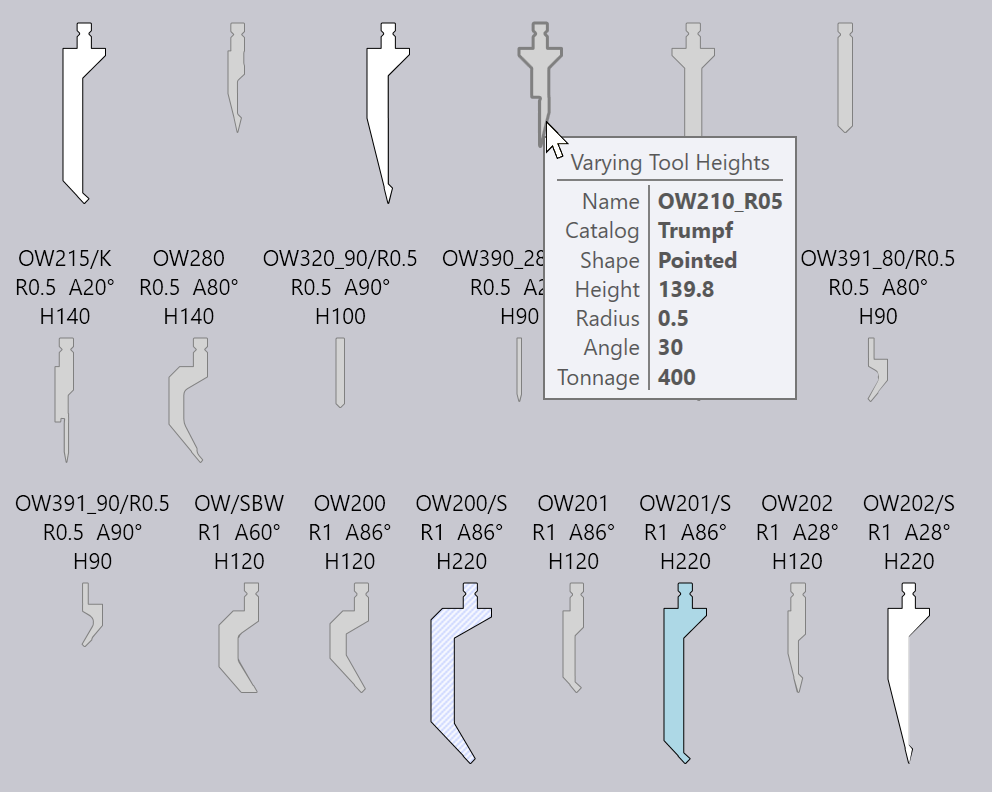

ツール マウントの編集
ツールマウントをクリックすると、曲げ加工マウントパネルが表示され、曲げマウントのさまざまな設定を編集したり、いくつかの加工工程を実行できます。
曲げ加工マウントパネル

横の画像は、曲げ加工マウントパネルです。正確な設定と使用可能な加工工程は、パンチ、ダイ、またはアダプタ マウントのどれをクリックするかによって異なります。また、マシンの機能によって、いくつかの設定が使用不可能な場合があります。
-
Change Tool ボタンをクリックして、選択したマウント用のツールを別のツールに置き換えます。（代替ツール選択に使用する_ツールセレクター_の詳細については、以下のセクションを参照してください)。
-
Length 入力は、ステーションの長さ調整に使用します。ここに新しい値を入力すると、 TecZone Bendはリクエストした長さにできるだけ近づけるよう、適切な_セグメント_セットを用いてステーションを再構成します。曲げ加工マウントに表示されるセグメントの境界線で、使用されているセグメントの目視チェックが可能です。
-
Position入力で、マシン テーブルまたはビームに沿ったマウントの左端の位置を設定します。マウントを左右に_ドラッグして_も位置調整が出来ます。（マウントのドラッグについては、以下のセクションを参照してください）。
-
Ear セレクター（パンチマウントに限り表示）を使って、TecZone Bendに左および／または右側のear[1]構成内のピース）。
-
Flip Tool を使って、ツールを反転します（フロントから背面へ）。これは、_非対称_ツール (たとえば、湾曲したツールなど) を使用するマウントの編集の際に表示されます。フリップ操作はインテリジェントで、一貫性を保つためには他のホルダーやツールの反転も必要かを自動的に判断します。 たとえば、下の画像の例では、OW_Z 4パンチ（ Z状曲げに使用）を反転すると、ダイ、ホルダー、さらにはパーツも反転し、プロセスの一貫性を維持します。

-
Add Adapter を使って、パンチやダイの高さを増すための_エクステンダー_を追加します。アダプタを追加すると、アダプタが選択され、アダプタのパネルが表示されます (これにより、実際に使用するアダプタを変更したり、削除したりできます)。

-
Add Gap を使って、フランジが衝突なしに通過できるようツール マウントに隙間を追加します (詳細については、以下の隙間追加のセクションを参照してください)。
-
Taller tool を使って、選択したツールを同じファミリーの異なる高さのツールに置き換えます。
-
Removeをクリックしてツールマウントを取り外します。このステーションを使用する曲げ加工に関して、曲げ加工ナビゲーターに_パンチ欠如_または_ダイ欠如_のエラーが表示されます。問題解消には、左側のコマンドバーにある追加を使用して、新しいマウントを追加します。
-
ACB Sensor セレクターを使用して、このパーツに使用するさまざまな ACB センサー ディスク ペアを切り替えます。選択は、材料の厚さと、使用するパンチによります。
-
Inventory check チェックボックスを選択した場合、使用するセグメントと利用可能なピースの_在庫_が照合されます (Inventorリンクをクリックして編集できます)。在庫にないセグメントが使用されると、特殊な三つ葉記号（トレフォイル記号）がそれらのセグメントに表示されます。以下の画像に示されているように、パンチ中央付近の40mmおよび45mmのピースがその例です：

これらの設定やファンクションでツールマウントを編集すると、 TecZone Bendはすぐにすべての曲げプロセスのステータスを検証し、衝突、ツール使用可否などの各種チェックを実行します。曲げ加工ナビゲーターのステータスは即座かつリアルタイムで更新されるので、さまざまな設定を試しても、即時に正確なフィードバックを得ることができます。
[ツールの置換]ウィンドウ
Change Tool ボタンをクリックすると、置換ツールウィンドウが表示されます：

このウィンドウには、可能なすべての置き換えツールが表示されます。
-
左側の階層を使用して選択肢を絞り込みます - たとえば、選択を容易にするために、湾曲したツールのみの表示が可能です。
-
上部のソートセレクターを使用して、名前、高さ、半径や その他のソート基準でソートします（パンチ、ダイ、またはアダプタのどれを取り替えるかによって、ソート基準が決まります）。
-
検索ボックスにツール名（または省略名）をして、リストを絞り込みます。ツール名の一部の入力でも大丈夫です - たとえば、OW200では、OW200、OW200/S、OW200/K のいずれのもマッチします
-
スケーリングスライダーで、ツール画像のサイズを調整します。現在使用されているツールは、輪郭が太く、青で塗りつされています。水色のクロスハッチ（斜線模様）は、このパーツで使用されるその_他のツール_を示します。
-
フィルターチェックボックスをオフにすると、（適合かどうかに関係なく）、すべてのツールを無制限に表示できます。このビューでは、不適切なツールはグレー表示され、これらのツールにマウスを移動すると、選択できない_理由_が表示されます：

マウスをツール画像上で移動すると、TecZone Bend _は_直ちに選択したツールを使用するツールマウントを再計算します。そして、検討中のツールが衝突問題を起こすかどうかをリアルタイムで確認できます（衝突があると、相当する曲げ加工が曲げナビゲーターで即座に赤表示になります） このリアルタイムのプレビューのおかげで、適切なツールが見つかるまで、さまざまなツールを試すことが出来ます。
ツールの1つをクリックして選択しすると、新しいツールがパーツに適用されます。代わりにEsc を押すと、プレビューの選択は元に戻り、元のツールが変更されずにそのまま残ります。
ナビゲーションと選択
ベンドマウント パネルには、_ナビゲーション_および_選択_サブパネルにさまざまなボタンが表示されます。
-
Setup ナビゲーションボタンを使って、曲げセットアップ全体の編集に移動してください。詳細については、セットアップエディタページを参照してください。
-
Prev とNextボタンを使用して、このセットアップの異なるツールマウントを切り替えてます。
-
Segments ナビゲーションボタンを使用して、1つ下のレベルに移動して、このマウントを構成する_個々のセグメント_を編集します。以下のツールマウントセグメントの編集セクションに、これに関する詳細情報があります。
-
Tool Station セレクターを使用して、この_ステーション_を構成するすべてのツールマウントを選択します。こうすると、選択したマウントに調整済みのすべてのパンチ、ダイ、ホルダーを選択し、一緒に編集/移動できます。
-
Same Tool セレクターを使用して、 同じツールを使用する他のマウントを選択します。これは、_ツール交換_前に役立ちます；指定されたツールを使用しているすべてのステーションを選択すると、代替ツールの選択肢を広げることができます。[2] === 複数マウントの編集 image::edit-mounts.png[Multiple mounts,float="right",width=138] Shift+クリックを使用して複数のマウントすべて選択すると、まとめて編集できます。すべてのマウントに共通する設定および操作のみが編集可能です。
Length またはPositionなどのフィールドは、すべてのマウントで同じな場合にのみ、編集用に表示されます。
複数のステーションがある場合は、ツール変更プロセス実行の前に、すべてのパンチやダイを選択すると便利です。この場合、使用可能な交換用ツールの選択肢が広がります (異なる高さのパンチとダイが衝突する危険がないので)。
曲げツールマウントのドラッグ

Position 入力を使用して、マウントの正確な位置を設定します。ベンドマウントを新しい位置にドラッグする方が簡単な場合もあります。それには：
-
ベンドマウントをクリックして選択します（Shift+クリックを使用して複数のマウントを選択します）
-
クリックして左右にドラッグし、選択したマウントを移動します。上の画像が示すように、選択したマウントの上にマウスを移動すると、選択したマウントをドラッグできることを示す矢印ヘッドが表示されます。マウントをドラッグすると、スナップインジケーターが表示され、他の既存マウントと簡単に調整出来ます。
マウントの左端付近を_選択する_と、すべてのマウントの左端がスナップに使用されます。マウントの中央を選択すると、すべてのマウントの中央線がスナップに使用されます。
上級加工工程
ベンドマウントエディタパネルを使用した、より高度な操作をご紹介します。
ツールマウントセグメントの編集
曲げツールマウントを編集時にセグメントナビゲーションボタンをクリックすると、隣の画像のような_ツールセグメント_パネルが開きます。

-
Segment セレクターを使用して、選択したツールセグメントをもっと長いものや短いもの、あるいは異なるタイプのピースに置き換えます。
-
< Shift とShift >ボタンで、 選択したセグメントを構成内の左または右にシフトします。これで構成全体の長さは変わりませんが、例えば開口部を回避するため位置ストップセンサーを左右に移動する際などに便利です。
-
Add とRemoveボタンを使用して、新しいセグメントを構成に追加したり、選択したセグメントを削除します。
-
Prev およびNextナビゲーションボタンを使用して、曲げ加工マウントのセグメントを切り替えて編集します。上の画像が示すように、編集中のツールセグメントが青でハイライトされます。
-
Mount ナビゲーションボタンを使って、1つ上のレベルに移動し、 個々のセグメントではなく、曲げ加工マウント全体を編集します。
マウントに隙間を追加
ツールマウントに狭い_隙間_を追加すると、衝突なしにフランジが通過できるようにするためなどに有用です。それには、以下をクリックします
Add Gap ボタン（ツールマウントが十分に長い場合に表示されます）。パネルに小さなセクションが表示され、左マージン、右マージン、および実際の隙間を設定する相互に連動した入力欄が表示されます。これら3つの合計はツールマウントの長さと一致しなくてはならないので、いずれか2つを編集すると、残りの1つは自動的に設定されます。下の画像は、進行中のこの操作です。フランジがパンチと衝突しそうです。従って、左／右マージンを調整して、提案した隙間をフランジとパンチの交差位置に配置します（提案したギャップは、曲げ加工マウント上に表示される2本のオレンジ色の線です）。

このサブパネルのOKボタンをクリックすると、隙間が作成され、衝突エラーが解消されます：

| パンチホルダーを使用するステーションを編集する際、TecZone Bend は隙間をパンチのみに設けるか、パンチとホルダーの両方に設けるかを尋ねます。 |